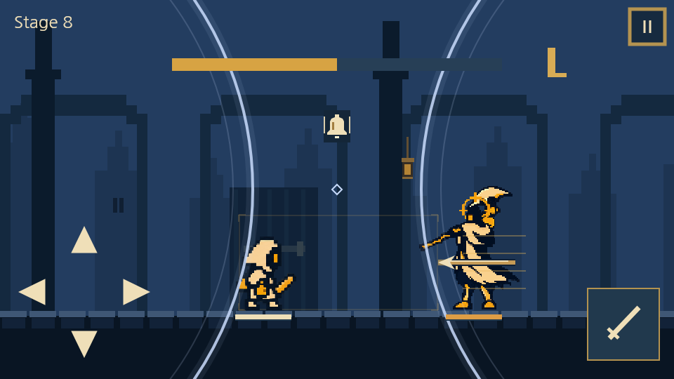
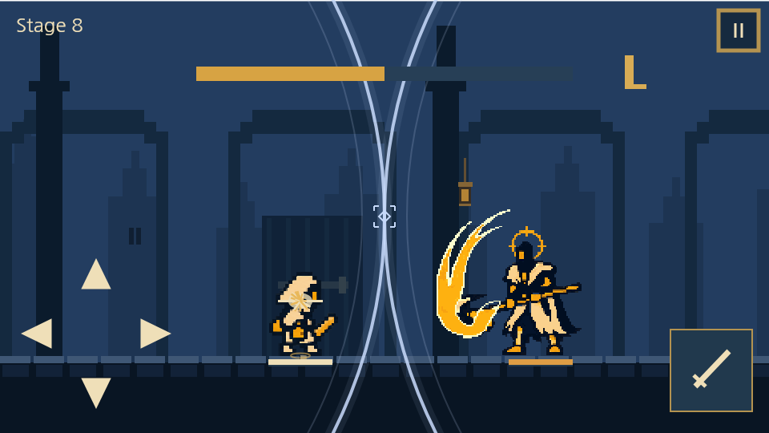
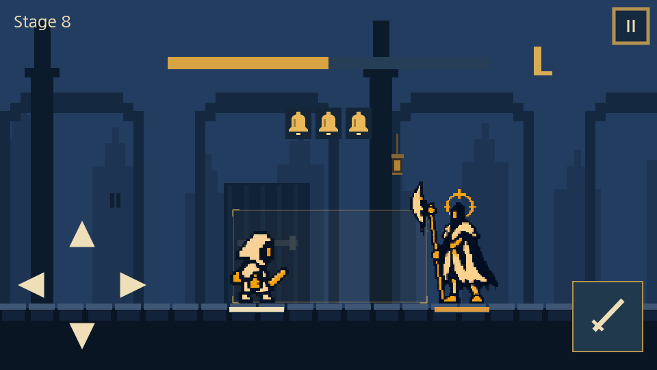
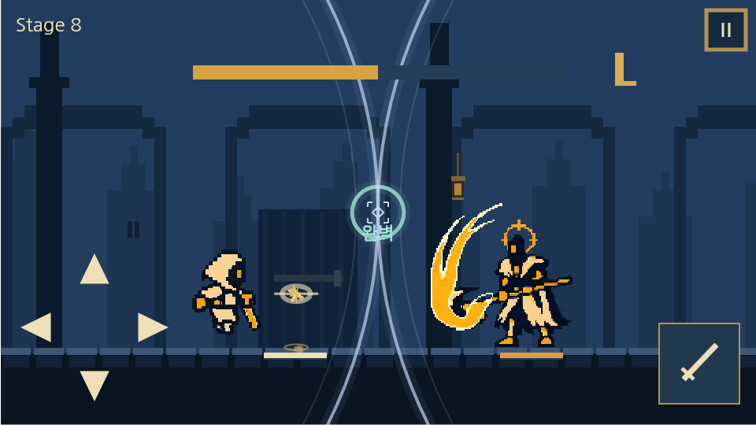

화면 밖 두 개의 고정 원점
960×540 기준 왼쪽 원점(-120,270), 오른쪽 원점(1080,270)에서 반경0으로 시작합니다. 원점은 보이지 않습니다. 원의 반지름만 일정하게 커져 반경600px에서 두 앞끝이(480,270)에 맞닿습니다.
원이 커지면서 위·아래가 화면 밖으로 잘려 화면 전체를 가로지르는 큰 파동으로 보입니다. 주선 뒤에는 옅은 잔향 한 겹만 두며, 가장 밝은 앞선이 입력 기준입니다.
보이지 않는 좌우 원점에서 커다란 원형 파동이 퍼져 나옵니다. 두 원이 화면 정중앙에 맞닿는 순간이 회피 시점입니다. 금빛 히트박스의 채움·점멸 노출을 줄인 안도 함께 비교합니다.
‘대형 원형 파동 바로 보기’로 재생하거나 ‘히트박스 노출’에서 단축안/기존을 바꿔 보세요. 종·연타·직접 타이밍 입력·채택할 후퇴와 공격 동작도 확인할 수 있습니다.


960×540 기준 왼쪽 원점(-120,270), 오른쪽 원점(1080,270)에서 반경0으로 시작합니다. 원점은 보이지 않습니다. 원의 반지름만 일정하게 커져 반경600px에서 두 앞끝이(480,270)에 맞닿습니다.
원이 커지면서 위·아래가 화면 밖으로 잘려 화면 전체를 가로지르는 큰 파동으로 보입니다. 주선 뒤에는 옅은 잔향 한 겹만 두며, 가장 밝은 앞선이 입력 기준입니다.
첫 파동은 T−600ms에 생성되고 T−480ms에 화면 안으로 들어옵니다. 연타의 다음 파동은 이전 타격 때 생성해360ms/320ms 후 중앙에 닿습니다. 화면에 보이는 시간은288ms/256ms입니다.
접촉 모양을45ms 동안 빠르게 흐려 잔광으로 남깁니다. 이는 늦은 입력을 인정하는 시간이 아닙니다. 일반160ms·완벽60ms·재사용260ms와 실제 타격 시각은 유지합니다.
| 금빛 채움·점멸 | 기본 | 빠른 박자 | 점멸 후 |
|---|---|---|---|
| 단축안 · 미리보기 기본 선택 | 540ms / 3회 기존보다31% 짧게 | 390ms / 3회 기존보다26% 짧게 | 채움 없이 alpha0.14 테두리만 유지 |
| 기존안 | 780ms / 3회 | 530ms / 3회 | 기존 잔여 윤곽 유지 |
예고 시작·발사·타격은 그대로 두고 금빛 채움의 노출만 먼저 줄입니다. 공간은 금빛으로 읽고, 남은 시간은 큰 원형 파동으로 읽는 역할을 분명하게 합니다. 연속 공격에서 앞서 본 방향을 잊지 않도록 흐린 테두리는 남깁니다.
노출 단축은 비교용 제안입니다. 먼저1배속에서 방향과 시점이 모두 읽히는지 확인합니다. 이 단계에서 공격 속도까지 함께 올리지 않습니다.
| 패턴 | 기본 타격 T | 빠른 타격 T |
|---|---|---|
| 단발 | 900ms | 650ms |
| 2연타 | 1680 / 2040ms | 1180 / 1500ms |
| 3연타 | 2460 / 2820 / 3180ms | 1710 / 2030 / 2350ms |

첫 예고부터 전체 공격 수만큼 종을 보여줍니다. 피했든 맞았든 각 타격이 끝나면 왼쪽 종부터 하나씩 사라집니다. 남은 종의 위치는 움직이지 않습니다.
곧 타격할 종에는 밝은 양옆 선을 붙입니다. 금빛 사각형 색을 바꾸지 않아도 실루엣 개수로 남은 공격 수를 알 수 있습니다. 적이 기절하거나 죽어 공격이 취소되면 종과 수렴 파동도 즉시 사라집니다.
사용자가 선택한 기준은 v5.5 미리보기의 dodge / heroState / drawHero입니다. 새 시안에서도 이 자동 시연의 이동 곡선과 포즈를 유지했습니다.
| 동작 | 현재 인게임에서 확인한 차이 | 채택할 미리보기 기준 |
|---|---|---|
| 후퇴 회피 | 입력 시 후퇴 위치로 즉시 이동, 활성160ms 종료 후 원점 복귀 | 90px 후퇴를50ms에 진행 → 타격 뒤100ms 유지 →130ms에 복귀. 초반이 빠른 1−(1−p)³ 곡선 |
| 공격 접근 | 120ms 동안 달리기 포즈, SmoothStep 이동. 일반 적 기준210px 접근,300~460ms 복귀 | 공격 준비 포즈로165px를120ms에 접근. 입력200ms에 타격,230~500ms에 같은 곡선으로 복귀 |
| 완벽 반격 | 유효한 공격 입력을 받을 때 원점 복귀 후 접근 | 즉시 원점 복귀는 유지. 이어지는 접근·베기·복귀의 곡선과 포즈를 미리보기에 맞춤 |


적용 시 이동 샘플을 실제 몸체 판정과 공유합니다. 늦은 유효 입력은 남은 타격 시간에 맞춰 진입을 압축하고, 정확히 T에 수락된 입력은 해당 프레임에 회피 위치를 사용합니다. 보스·중간보스는165px를 강제로 적용하기보다 적 몸체와의 간격을 검증해 같은 접근감으로 맞춥니다. 현재 게임의 공격 쿨타임·피해·회피 보너스를 새 애니메이션이 바꾸지 않도록 검증합니다.
| 항목 | 규칙 |
|---|---|
| 화면 크기 변경 | 원점(-0.125W,0.5H)/(1.125W,0.5H), 접촉 반경0.625W. 원의 X/Y 반경은 같은 물리 픽셀. |
| 종 | 중앙 상단(0.5,1/3). 단발1개/2연타2개/3연타3개. 각 타격 때 하나씩 사라짐. |
| 완벽 회피 성공 | 청록 파동은 중앙에서 바깥까지. 다음 타이밍 파동이 나오면 이전 성공 파동을 옅게 표시. |
| 일시정지·재개 | 전투 시계와 함께 반경·종·잔광을 정지/재개. 카메라와 독립된 화면 좌표. |
| 큐 취소·전투 종료 | 해당 타이밍 원·종을 즉시 제거. |
| 연출 줄이기 | 타이밍용 큰 원 한 겹은 유지. 번짐·보조 잔향·성공 확산·입자·흔들림 제거. |
| 소리 끄기 | 형태와 위치만으로 타이밍 전달. 미리보기는 무음. |
24개 조합(기본/빠름×6패턴×기존/단축)을 로컬 Canvas로 확인했습니다. 고정된 화면 밖 원점, 실제 원형 렌더, 중앙 접촉 시각,45ms 접촉 잔광, 각3회 점멸, 동일 타격 시각, 종 소모, 직접 입력, 정지,640×360/960×540 렌더를 확인했습니다. 기기 플레이 난도는 이 검사와 별개로 검토해야 합니다.